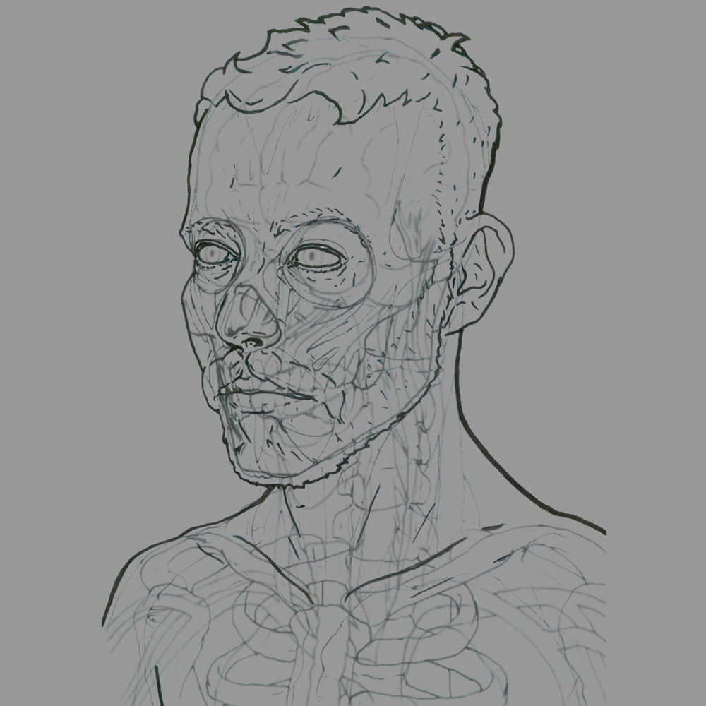
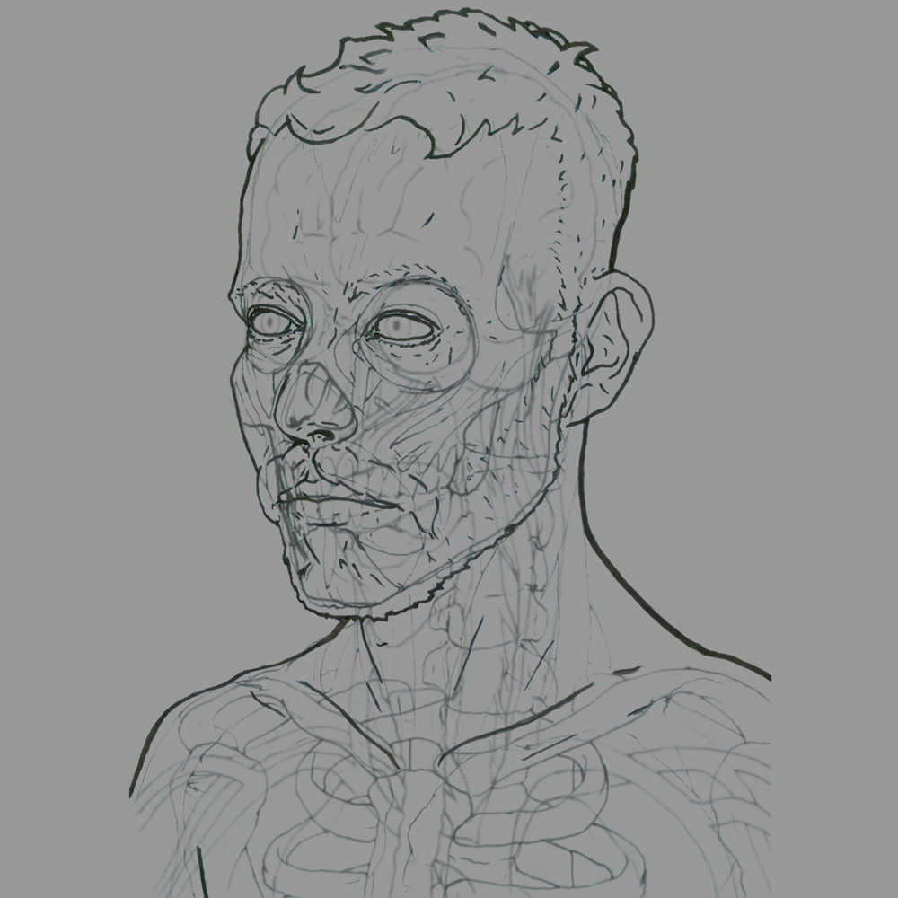

 


Crowdfunding on Artizen
Locus has been curated for the Season 3 Official Selection of the Artizen fund for human creativity.
On this crowdfunding platform, creators engage their communities to support projects, multiplied by match-funds, and compete for the Artizen Prize.
If this project resonates with you, Artizen is an ideal way to support it and fund the team creating it.
For Locus
Artizen and their sponsors match your contribution, amplifying your impact on the project!
You can support Locus by buying Artifacts, a token per Ξ0.01 / US$23 you contribute.
Artifact sales fund the project directly, unlock more match-funding, and move it up the leaderboard for the Artizen Prize.
For you
Locus rewards you for your support, both right now and to be integrated into the future final artwork.
Each Artifact is an NFT asset that benefits both you and the project.
Your Artifacts are investments in Locus, a stake whose worth grows with the project and its community.
The Artifacts you own also grant you access to private Locus and Artizen communities, and votes in future Artizen curations.